How it works / Glossary
Glossary: every word we teach
Every new word in IDEAL Thinkers, by year group, with its child friendly meaning and the picture it is always paired with on the slides. Using the same picture each time helps pupils remember the word.
No words match that search.
Year 1: Machines That Guess
the AI Loop
Learn, Spot, Guess, Check: what AI does, and the check that people do.
Taught in Year 1 Lesson 3: The Mystery Rule
Year 2: Using AI Wisely


personal information
Facts about you, like your full name, where you live or your school.
Taught in Year 2 Lesson 4: Keep it to yourself

AI helper
A machine that uses AI to help people do a job. For important jobs, a person checks.
Taught in Year 2 Lesson 5: AI Helpers Hall of Fame
Year 3: AI in Everyday Life
feed
The list of videos or posts an app shows you, one after another.
Taught in Year 3 Lesson 1: What's in your feed?

recommend
To suggest something because you think someone will like it.
Taught in Year 3 Lesson 1: What's in your feed?
voice assistant
An AI helper you talk to, that talks back, such as Alexa or Siri.
Taught in Year 3 Lesson 2: Is it always listening?
wake word
The special word that makes a voice assistant start recording.
Taught in Year 3 Lesson 2: Is it always listening?
privacy
Keeping things about you to yourself, and choosing who knows them.
Taught in Year 3 Lesson 2: Is it always listening?
caption
Words on a screen that show what is being said.
Taught in Year 3 Lesson 3: AI that helps everyone
translate
To change words from one language into another.
Taught in Year 3 Lesson 3: AI that helps everyone
accessible
Easy for everyone to use, see, hear or join in with.
Taught in Year 3 Lesson 3: AI that helps everyone
hint
A clue that helps you think, without giving you the answer.
Taught in Year 3 Lesson 4: Hint, not answer


"Made with AI"
A label that tells people AI helped to make something.
Taught in Year 3 Lesson 5: Who made it?
design
To plan how something will look and work, before it is made.
Taught in Year 3 Lesson 6: The Helpful Feed
wellbeing
Feeling healthy, happy and safe, in your body and your mind.
Taught in Year 3 Lesson 6: The Helpful Feed
Year 4: Machines That Talk
chatbot
A computer program you can type or talk to that answers in sentences.
Taught in Year 4 Lesson 1: What comes next?

prediction
A guess about what comes next, based on patterns.
Taught in Year 4 Lesson 1: What comes next?
trusted adult
A grown up you know, who keeps you safe and helps when you are worried.
Taught in Year 4 Lesson 2: Is a chatbot a friend?
trusted source
A book, website or person known for getting things right.
Taught in Year 4 Lesson 3: Sure isn't right
hallucination
When an AI makes something up and says it as if it is true.
Taught in Year 4 Lesson 3: Sure isn't right

probability
How likely something is to happen, in words or as a number.
Taught in Year 4 Lesson 5: How sure is it?
rulebook
A set of rules that says what something must do, and what it must never do.
Taught in Year 4 Lesson 6: Chatty's Rulebook
Year 5: Data, Training and Fairness

rule based program
A computer program that follows rules a person has written.
Taught in Year 5 Lesson 1: Rules or examples?
machine learning
When a computer finds its own patterns in lots of examples.
Taught in Year 5 Lesson 1: Rules or examples?

model
What machine learning makes: the patterns it found, ready to make guesses.
Taught in Year 5 Lesson 1: Rules or examples?


test data
New examples, kept back, to check what the AI really learned.
Taught in Year 5 Lesson 2: Train the sorter


permission
When the person in charge of something says yes, you may use it.
Taught in Year 5 Lesson 3: Whose is it anyway?

consent
Freely saying yes, when you understand what you are saying yes to.
Taught in Year 5 Lesson 3: Whose is it anyway?
copyright
The law that says the person who made a work decides who can copy it.
Taught in Year 5 Lesson 3: Whose is it anyway?
bias
When an AI works better for some people than others, again and again.
Taught in Year 5 Lesson 4: The Welcome Bot

balanced data
Training data with enough examples of every group who will use the AI.
Taught in Year 5 Lesson 4: The Welcome Bot
STAIR
A way to plan a prompt so that AI helps you learn: Specific, Tell, Actionable, Iterate, Role.
Taught in Year 5 Lesson 5: Climb the STAIR

feedback
Information about what is working and what to improve.
Taught in Year 5 Lesson 5: Climb the STAIR
dataset
A collection of examples, gathered and labelled, for an AI to learn from or be tested on.
Taught in Year 5 Lesson 6: Train a class model
Year 6: AI, Society and the Future
generated
Made by AI from patterns it learned, not captured by a camera or microphone.
Taught in Year 6 Lesson 1: Real or generated?
deepfake
A generated or changed video, picture or voice that makes a real person seem to do or say something they never did.
Taught in Year 6 Lesson 1: Real or generated?
stereotype
A fixed idea that everyone in a group is the same, or should be.
automation
When a machine or computer program does a task by itself, without a person doing each step.
Taught in Year 6 Lesson 3: AI at work

data centre
A building full of powerful computers that store information and run websites and AI.
Taught in Year 6 Lesson 4: Is it worth it?
energy cost
How much energy something uses, and what that costs the planet.
Taught in Year 6 Lesson 4: Is it worth it?
accountable
Having to answer for what you did, and put it right if it went wrong.
Taught in Year 6 Lesson 5: Who's responsible?
transparent
Open and clear about how something works and how decisions are made.
Taught in Year 6 Lesson 5: Who's responsible?